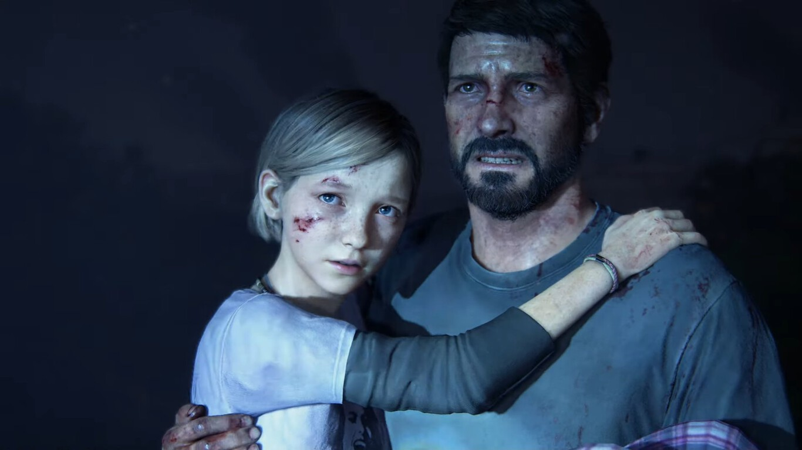
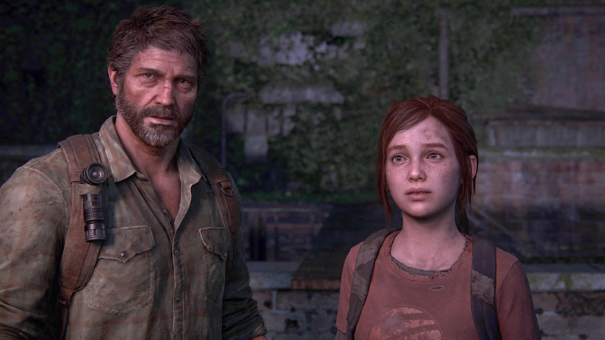
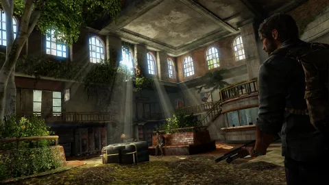
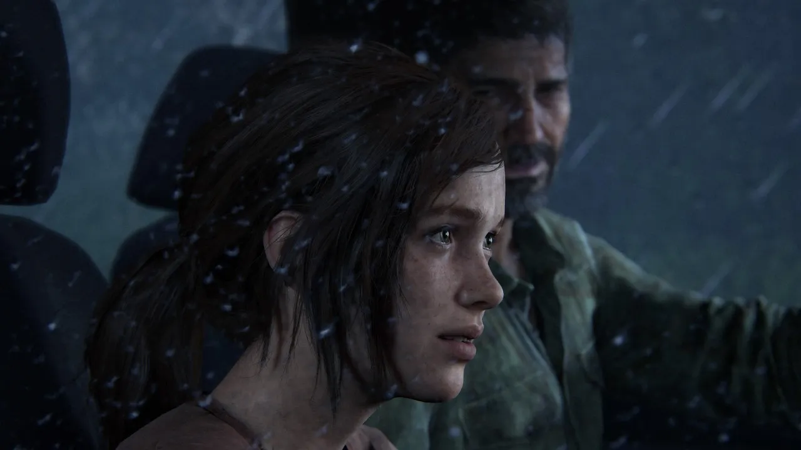
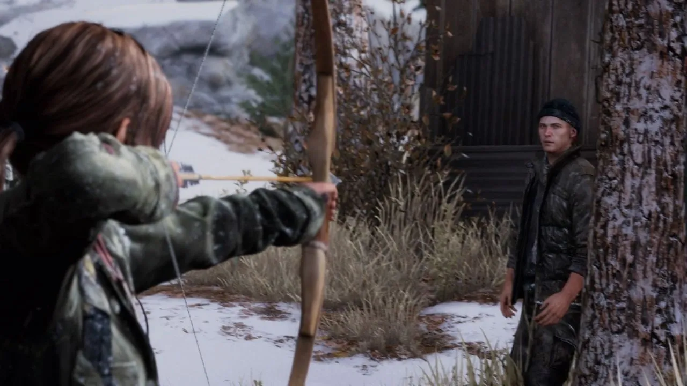
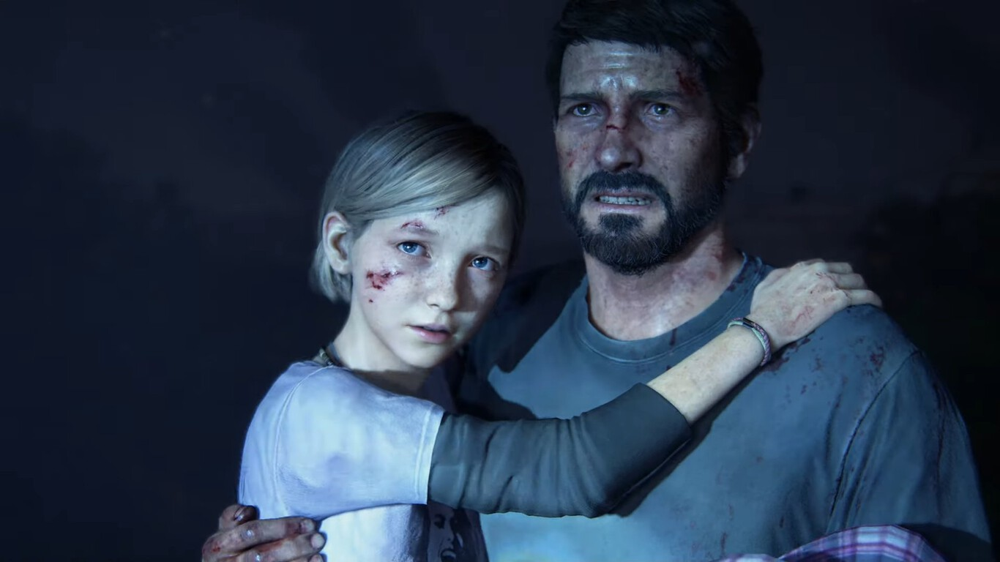
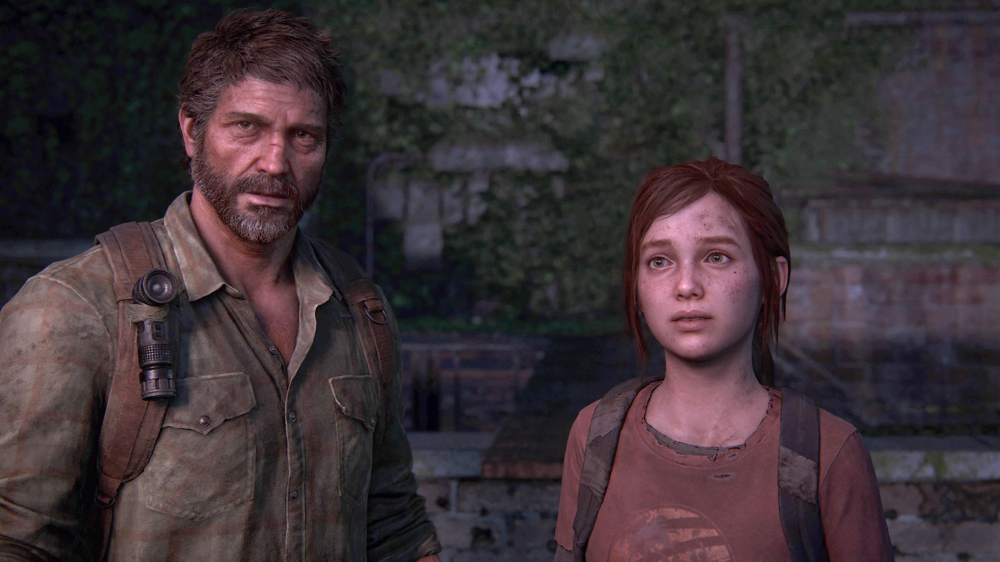
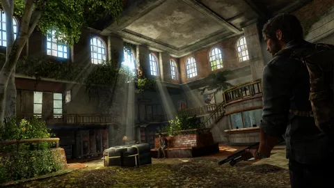
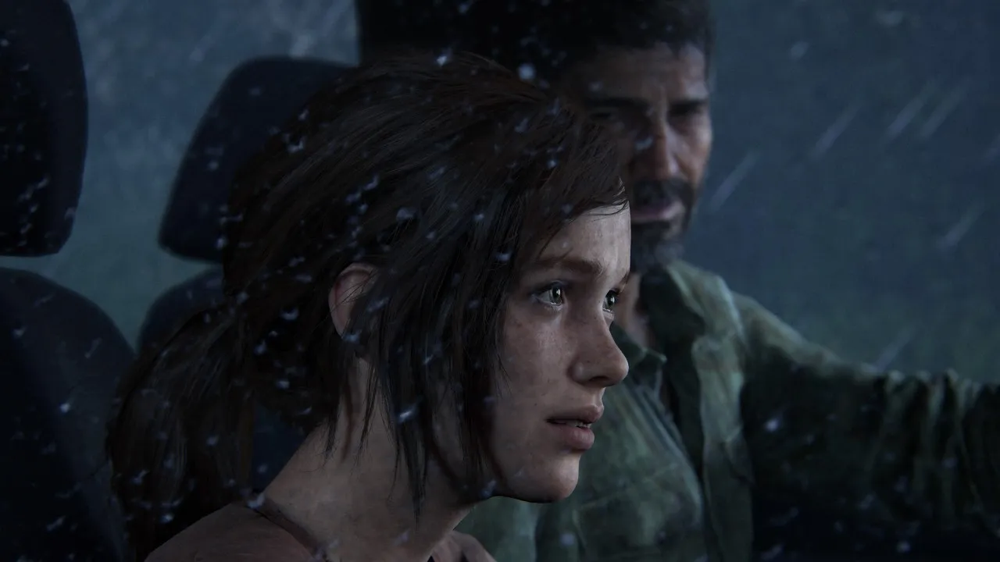
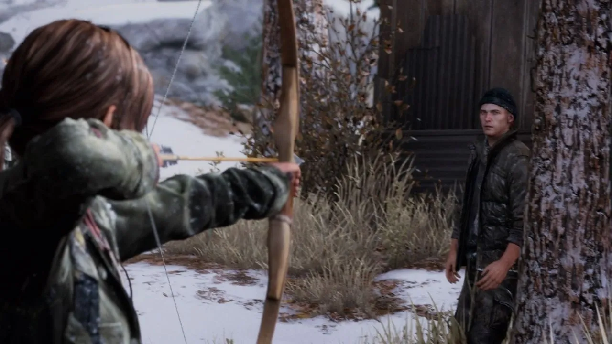

En Septiembre de 2013, se ha desatado una pandemia en Estados Unidos ante la aparición repentina de una variación mutada de la cepa del hongo Cordyceps el cual afecta a los humanos. En este escenario tan perturbador, Joel, su hija Sarah y su hermano Tommy, se disponen a abandonar su hogar ante la histeria colectiva producida por la pandemia. Cuando salían de su casa, un oficial del ejército, creyendo que Sarah estaba infectada, le dispara a esta última matándola dejando a ambos hermanos consternados. 20 años despues Joel ahora vive en la zona de North End en Boston, Massachusetts en donde se gana la vida como contrabandista junto con su compañera Tess. Un día, en una misión de recuperación de un cargamento de armas robado por un traficante, se enteran de la existencia de una misteriosa adolescente de nombre Ellie, la cual conocen a traves de un grupo rebelde llamado luciernagas,el cual piden que la lleven a la casa del Estado de Massachusetts en las afueras de la zona de cuarentena a cambio de obtener provisiones y comida entregando a la chica a dos miembros más de la organización. La pareja accede y mientras que tratan de escapar, descubren que Ellie tiene una herida de mordedura ocasionada por un infectado. La historia se centrara en el viaje de Joel, Tess y Eliie a traves del dificil mundo apocaliptico para llegar a su destino de intercambio, como se desarrollaran los personajes y que pasara en el camino?
Gameplay
 








